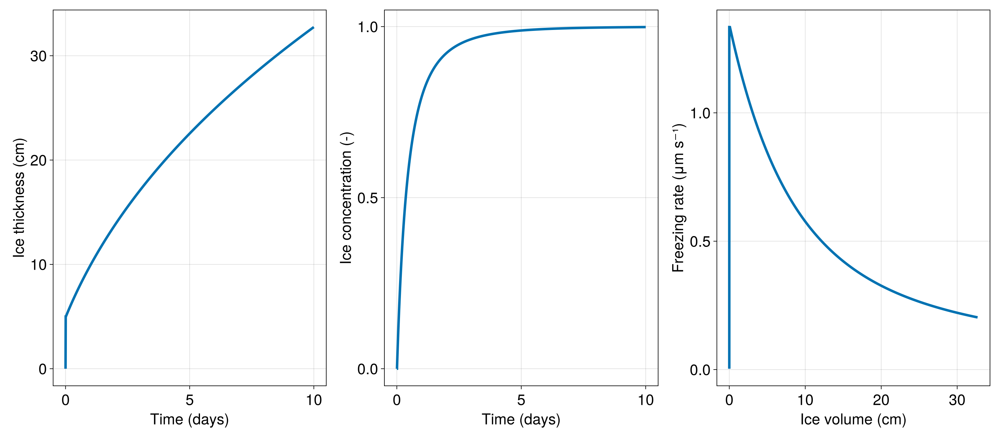

Freezing bucket example
A common laboratory experiment freezes an insulated bucket of water from the top down, using a metal lid to keep the top of the bucket at some constant, very cold temperature. In this example, we simulate such a scenario using the SeaIceModel. Here, the bucket is perfectly insulated and infinitely deep: if the Simulation is run for longer, the ice will keep freezing, and freezing, and will never run out of water. Also, the water in the infinite bucket is (somehow) all at the same temperature, in equilibrium with the ice-water interface (and therefore fixed at the melting temperature). This example demonstrates how to:
- use
SlabThermodynamicswith prescribed boundary conditions, - configure internal heat conduction,
- use
FluxFunctionfor frazil ice formation, - collect and visualize time series data.
Install dependencies
First let's make sure we have all required packages installed.
using Pkg
pkg"add Oceananigans, ClimaSeaIce, CairoMakie"Using ClimaSeaIce.jl
Write
using Oceananigans
using Oceananigans.Units
using ClimaSeaIce
using CairoMakieto load ClimaSeaIce functions and objects into our script.
An infinitely deep bucket with a single grid point
Perhaps surprisingly, we need just one grid point to model a possibly infinitely thick slab of ice with SlabSeaIceModel. We would only need more than 1 grid point if our boundary conditions vary in the horizontal direction:
grid = RectilinearGrid(size=(), topology=(Flat, Flat, Flat))1×1×1 RectilinearGrid{Float64, Flat, Flat, Flat} on CPU with 0×0×0 halo
├── Flat x
├── Flat y
└── Flat z Model configuration
We build our model of an ice slab freezing into a bucket. We start by defining a constant internal ConductiveFlux with ice conductivity:
conductivity = 2 # W m⁻¹ K⁻¹
internal_heat_flux = ConductiveFlux(; conductivity)ConductiveFlux{Float64}(2.0)Note that other units besides Celsius can be used, but that requires setting model.phase_transitions with appropriate parameters. The microscopic pure-ice heat capacity enters the Stefan correction to the latent heat:
heat_capacity = 2100 # J kg⁻¹ K⁻¹
phase_transitions = PhaseTransitions(; heat_capacity)PhaseTransitions{Float64}
├── density: 917.0
├── heat_capacity: 2100.0
├── liquid_density: 999.8
├── liquid_heat_capacity: 4186.0
├── reference_latent_heat: 334000.0
├── reference_temperature: 0.0
└── liquidus: LinearLiquidus(freshwater_melting_temperature = 0.0, slope = 0.054)We set the top ice temperature:
top_temperature = -10 # °C
top_heat_boundary_condition = PrescribedTemperature(top_temperature)PrescribedTemperature{Int64}(-10)Constructing the thermodynamics
We construct the ice thermodynamics using a simple slab sea ice representation:
ice_thermodynamics = SlabThermodynamics(grid;
internal_heat_flux,
top_heat_boundary_condition)SlabThermodynamics
└── top_surface_temperature: ConstantField(-10)Frazil ice formation
We also prescribe a frazil ice heat flux that stops when the ice has reached a concentration of 1. This heat flux represents the initial ice formation from a liquid bucket:
@inline frazil_ice_formation(i, j, grid, Tuᵢ, clock, fields) = - (1 - fields.ℵ[i, j, 1]) # W m⁻²
bottom_heat_flux = FluxFunction(frazil_ice_formation)FluxFunction of frazil_ice_formation (generic function with 1 method)Building the model
Then we assemble it all into a model:
model = SeaIceModel(grid; ice_thermodynamics, phase_transitions, sea_ice_density=900, bottom_heat_flux)SeaIceModel{Oceananigans.Architectures.CPU, Oceananigans.Grids.RectilinearGrid}(time = 0 seconds, iteration = 0)
├── grid: 1×1×1 RectilinearGrid{Float64, Flat, Flat, Flat} on CPU with 0×0×0 halo
├── timestepper: SplitRungeKuttaTimeStepper(3)
├── ice_thermodynamics: SlabThermodynamics
├── snow_thermodynamics: Nothing
├── advection: Nothing
└── external_heat_fluxes:
├── top: FluxFunction of slab_internal_heat_flux (generic function with 2 methods) with parameters @NamedTuple{flux::ConductiveFlux{Float64}, liquidus::ClimaSeaIce.SeaIceThermodynamics.LinearLiquidus{Float64}, bottom_heat_boundary_condition::ClimaSeaIce.SeaIceThermodynamics.HeatBoundaryConditions.IceWaterThermalEquilibrium{Int64}}
└── bottom: FluxFunction of frazil_ice_formation (generic function with 1 method)Note that the default bottom heat boundary condition for SlabThermodynamics is IceWaterThermalEquilibrium with freshwater. That's what we want!
model.ice_thermodynamics.heat_boundary_conditions.bottomClimaSeaIce.SeaIceThermodynamics.HeatBoundaryConditions.IceWaterThermalEquilibrium{Int64}(0)Running a simulation
We're ready to freeze the bucket for 10 straight days. The ice will start forming suddenly due to the frazil ice heat flux and then eventually grow more slowly:
simulation = Simulation(model, Δt=10minute, stop_time=10days)Simulation of SeaIceModel{CPU, RectilinearGrid}(time = 0 seconds, iteration = 0)
├── Next time step: 10 minutes
├── run_wall_time: 0 seconds
├── run_wall_time / iteration: NaN days
├── stop_time: 10 days
├── stop_iteration: Inf
├── wall_time_limit: Inf
├── minimum_relative_step: 0.0
├── callbacks: OrderedDict with 3 entries:
│ ├── stop_time_exceeded => Callback of stop_time_exceeded on IterationInterval(1)
│ ├── stop_iteration_exceeded => Callback of stop_iteration_exceeded on IterationInterval(1)
│ └── wall_time_limit_exceeded => Callback of wall_time_limit_exceeded on IterationInterval(1)
└── output_writers: OrderedDict with no entriesCollecting data
Before simulating the freezing bucket, we set up a Callback to create a time series of the ice thickness saved at every time step:
timeseries = []
function accumulate_timeseries(sim)
h = sim.model.ice_thickness
ℵ = sim.model.ice_concentration
push!(timeseries, (time(sim), first(h), first(ℵ)))
end
simulation.callbacks[:save] = Callback(accumulate_timeseries)Callback of accumulate_timeseries on IterationInterval(1)Now we're ready to run the simulation:
run!(simulation)[ Info: Initializing simulation...
[ Info: ... simulation initialization complete (135.581 ms)
[ Info: Executing initial time step...
[ Info: ... initial time step complete (601.227 ms).
[ Info: Simulation is stopping after running for 746.252 ms.
[ Info: Simulation time 10 days equals or exceeds stop time 10 days.Visualizing the results
It'd be a shame to run such a "cool" simulation without looking at the results. We'll visualize it with Makie:
timeseries is a Vector of Tuple. So we have to do a bit of processing to build Vectors of time t and thickness h. It's not much work though:
t = [datum[1] for datum in timeseries]
h = [datum[2] for datum in timeseries]
ℵ = [datum[3] for datum in timeseries]
V = h .* ℵ1441-element Vector{Float64}:
0.0
1.996007984031936e-6
0.0008023951298998808
0.00160273050793207
0.002396652464835711
0.003184258641132408
0.00396566058477708
0.004740970022267671
0.005510296660203651
0.006273747637690019
⋮
0.32601620475877696
0.3261384791775237
0.32626070818004327
0.32638289181618285
0.3265050301356998
0.3266271231882622
0.3267491710234487
0.326871173690749
0.32699313123956386Just for fun, we also compute the velocity of the ice-water interface:
dVdt = @. (h[2:end] .* ℵ[2:end] - h[1:end-1] .* ℵ[1:end-1]) / simulation.Δt1440-element Vector{Float64}:
3.3266799733865597e-9
1.3339985365264147e-6
1.3338922967203154e-6
1.3232032615060685e-6
1.312676960494495e-6
1.30233657274112e-6
1.2921823958176511e-6
1.2822110632266332e-6
1.2724182958106142e-6
1.262799585409993e-6
⋮
2.03866474851692e-7
2.037906979112288e-7
2.0371500419928227e-7
2.036393935659723e-7
2.0356386586160384e-7
2.0348842093731445e-7
2.0341305864414923e-7
2.033377788338009e-7
2.0326258135814716e-7All that's left, really, is to put those lines! in an Axis:
set_theme!(Theme(fontsize=24, linewidth=4))
fig = Figure(size=(1600, 700))
axh = Axis(fig[1, 1], xlabel="Time (days)", ylabel="Ice thickness (cm)")
axℵ = Axis(fig[1, 2], xlabel="Time (days)", ylabel="Ice concentration (-)")
axV = Axis(fig[1, 3], xlabel="Ice volume (cm)", ylabel="Freezing rate (μm s⁻¹)")
lines!(axh, t ./ day, 1e2 .* h)
lines!(axℵ, t ./ day, ℵ)
lines!(axV, 1e2 .* V[1:end-1], 1e6 .* dVdt)
save("freezing_bucket.png", fig)
If you want more ice, you can increase simulation.stop_time and run!(simulation) again (or just re-run the whole script).
This page was generated using Literate.jl.